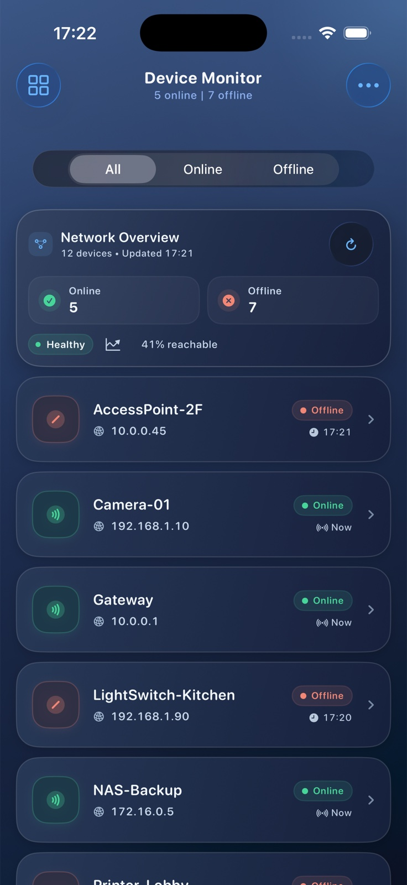

5 months
iOS Mobile Apps internship at Axis Communications in Lund
iOS developer · Malmö, Sweden
My focus is Swift, SwiftUI, concurrency and reliable product behavior. Most recently, I spent five months with the iOS Mobile Apps team at Axis Communications.
5 months
iOS Mobile Apps internship at Axis Communications in Lund
6 + 1
DeviceMonitor unit tests and UI launch smoke test verified locally
Java
Software-development degree; Android/Kotlin is a separate part of my mobile background
Selected work
My iOS degree-project prototype for viewing device state, status history and local or mock monitoring data. The code separates service, storage and view-model responsibilities rather than placing everything in views.

Simulator capture · deterministic mock/local device data
Built with
SwiftUI · SwiftData · Swift Concurrency
Verified behavior
Unit-tested status history and a simulator UI launch smoke test
Scope
Degree-project prototype, not a production network scanner
Experience
Five months working with Swift and SwiftUI in an agile product team. My work included debugging, UI improvements, API-related flows, quality assurance and collaboration with experienced engineers.
A practical foundation in Java, APIs, databases and software testing, complemented by Android development with Kotlin and Jetpack Compose.
DeviceMonitor repair
I restored the deleted Xcode project and reproduced the failing storage tests before changing production code.
A fixture-lifetime fault and stale status timestamp were distinct problems, each fixed at its source.
The final branch passes six unit tests, a UI title smoke test and a simulator run of the real interface.
Contact
I am interested in native mobile roles in Malmö, Lund, Copenhagen and remote teams in Sweden. GitHub shows the code; LinkedIn has the full work history.